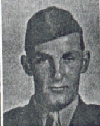

A letter from Harry Hansen

"I always remember during the battle of Saipan, we sort of adopted two young Korean men who swam into shore after their ship was hit. One of them had been a schoolteacher in Japan and the other had worked in a rifle factory. We were using them as scouts. We all enjoyed them as they were surely full of pep and full of fun, and I think that they were happy to be sort of a part of our outfit. (See Orvel Johnson's letter about Moe and Joe.) During the time we were advancing through the trees and undergrowth, the mosquitoes were driving us nuts, so we were passing mosquito lotion through the lines. All of a sudden, down the lines we heard choking, coughing and gagging with loud moans and groans. It seems as though our scouts thought it was time to get refreshed, and they DRANK THE LOTION INSTEAD OF APPLYING IT TO THEIR OUTSIDES. This incident did a lot to relieve our stress and fatigue.
Still on the island, remembering the 4th of July, we had been trying to take this hill and we just couldn't do it. There were days and days of trying, under constant attack. Our Navy was shelling it, our artillery was pounding on ahead, and tanks with their 75millimeter guns were added as the rockets were flying overhead towards the hill. Suddenly overhead there came a formation of our Navy planes, heading straight into this nightmare of death. Suddenly the formation all turned sideways and sliced their way through, without being hit - a breathtaking sight to behold. Their mission of strafing was completed.
After the barrage ceased, I looked to see all about, not a tree or bush was left standing. There was an eerie silence, and then I heard a BABY CRY! …I went over and found a young mother carrying a baby; the baby was all right but the mother's heel had been blown away - this was a real shock to see. Towards the end of the island we would meet other mothers with children on their backs, walking as if in a daze. We encountered one mother with a baby on her back and we could see the baby was dead. She let us bury the baby and we made a cross to mark the grave."
"On Iwo Jima on the 5th night they brought in replacements and they assigned a young kid to me. He said he was from Minnesota, where I am from. There was battle sounds and confusion all around us so we never got to exchange names. He was on the replacement ship that was coming in when his ship got hit from another ship. He shared my foxhole that first night. I felt real sorry for him because he didn't know anyone, or what we were doing there, and why. I always wondered if he made it or whatever happened to him.
Years later, in 1986, I received a call from Carroll Gregory, who had been a member of my squad, and who located me by phone the previous year. He asked me to get in touch with a fellow C Company member named Guy Rowe. Gregory thought he had joined us as a replacement on Iwo. I found his name in the phone directory, called him, and asked him if he had ever been in the Marine Corps. He replied, "yes!" I said, "What outfit?" He replied, "1-C-23, joined up on Iwo." I said, "You son of a gun, you were the kid that jumped into my foxhole on the 5th day of Iwo, and I always wondered whatever happened to you." He made it! After he got out, he came home and attended the U. of M., then went back into the Marine Corps for 20 years and ended up as a Captain. Today we are fast friends, continuing to see one another, getting together with other 4th Division Marines in our local chapter. SEMPER FI!
On the 8th day of the battle of Iwo Jima, we were attempting to take the 2nd airfield. Our platoon got too far ahead and got cut off from the others. As we tried to make our way back with overhead burst, I felt a ripping and tearing of flesh in my right shoulder, and I fell into a shell hole with other frightened and shocked guys, who were in such a state they were unable to help me. Suddenly over the rim of the hole appeared the face of Ralph Mooney, jumping into the hole. He saw that I was badly wounded, and jumping out he said, "I'll go find you a corpsman." He returned without a corpsman, but assuring me, "I'll try again," and praise God, he came through as he promised - a corpsman, John Furry, who was able to patch me up, but said "Sorry, there's no stretcher." I thanked him again and again, and said "I can walk, just point me in the right direction." I started out and thankfully a jeep came along and they made room for me and I finally ended up in a hospital in Pearl Harbor. While I was there I found out that both Mooney and Furry were killed on Iwo. I will be forever grateful to those two heroic and fearsome dedicated men, who saved my life while losing theirs in the line of duty …ONCE A MARINE, ALWAYS A MARINE…."
(Ed. Note. Ralph Mooney, KIA March 3, 1945. John Furry, KIA March 4.)
Written by Harry Hansen
Edited by John Seymour
Word Processing by Joline Doersam
Maintained on web site by Rowland Lewis
Last Modified 07/01/2000